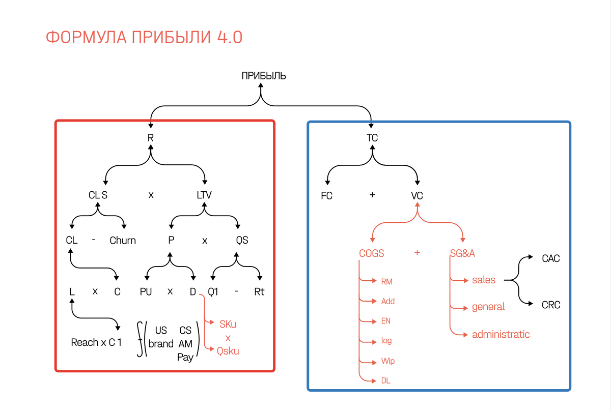
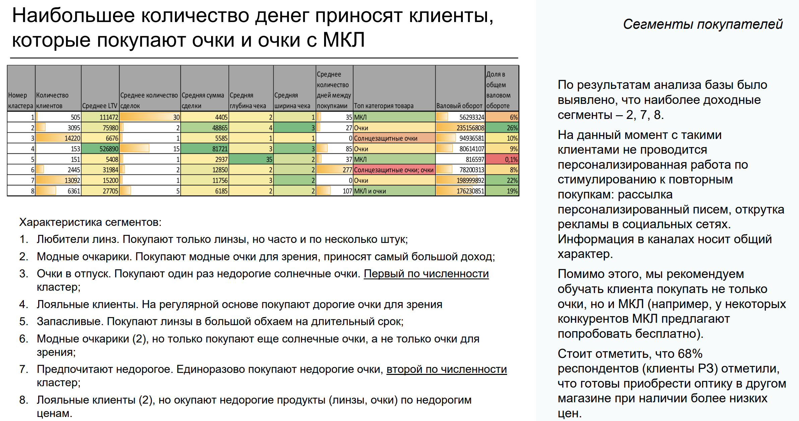
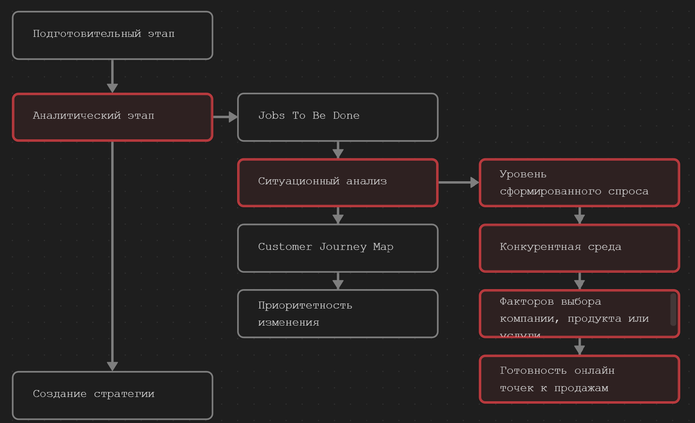
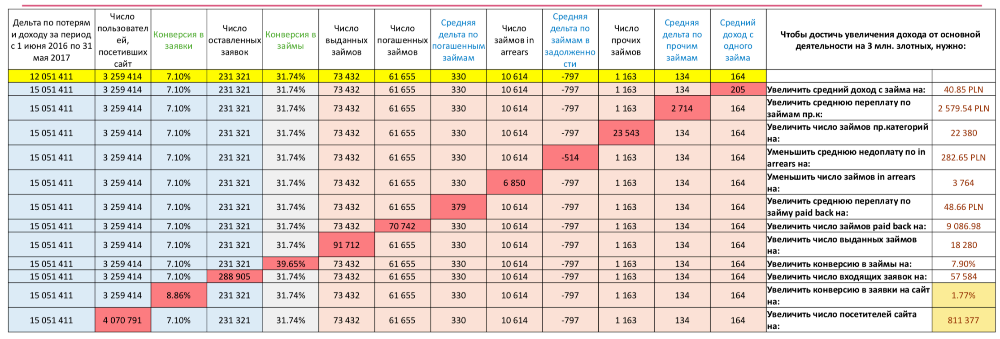
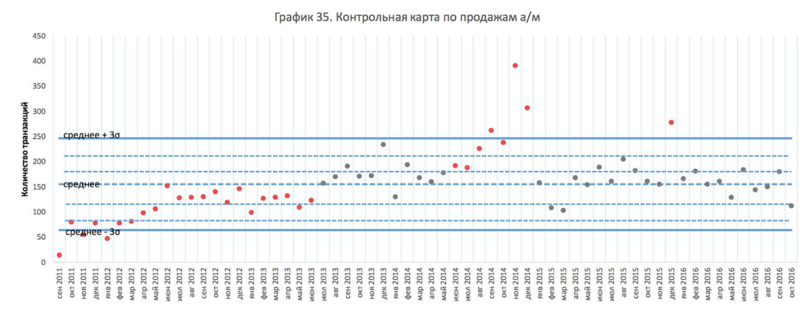
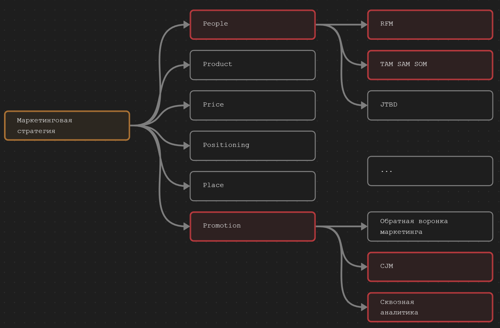

Маркетинговый консалтинг
Основанный на данных
Xод презентации
- Презентация состоит из трех блоков:
- Вводные
- Структура услуги
- Заключение
- Длительность 15-20 минут
- Вопросы можно задавать в конце смыслового блока
- Записи не будет
В вводной части расскажем кому будет полезна услуга, о формуле прибыли (что это такое и зачем она нужна) и как она поможет в разработки стратегий.
В заключении расскажем о векторах работ с нами, о преимуществах, сотрудниках, о срок и условиях сотрудничества.
Будет два вида презентации.
- для спикера
- в качестве раздаточного материала
- В раздаточной презентации изображение на вставленных рисунках чётче.
Вводные
Сила пустого слайда (только во время устной презентации)
- Дает сигнал, что смысловой блок закончен и можно задавать вопросы
- Пустые слайды помогают сделать отбивку между разделами
- Помогают аудитории сосредоточится на вопросе, а не на слайде
Суть услуги
С помощью услуги консалтинга в маркетинге основанного на данных мы найдем точки приложения усилий, в которых на 1 вложенный рубль ваша компания получит максимальный эффект.
Но прежде рассмотрим, что лежит в основе услуги.
Формула прибыли
В основе консалтинга лежит концепция формулы прибыли.
Деятельность 90% компании можно распределить по элементам формулы прибыли.
Формула прибыли
Формула прибыли — метод анализа, описывающий ключевые показатели, которые влияют на создание компанией прибыли.
Является ответом на классические методы бухгалтерского и управленческого учета и юнит-экономики, которые не позволяют принимать эффективные решения для маркетинга и продаж.
Формула прибыли: Схема

Формула прибыли разделена на две части
- Левая часть отвечает за стратегию роста
- Правая часть — стратегия эффективности
Формула прибыли: Схема

Формула прибыли:
Стратегии роста
Основные элементы воздействия:
CLs— успешные клиенты. Задача — Расширение возможностей извлечение дохода (новые клиенты, рынки, продукты).
LTV— доход от клиента за все время работы с компанией. Задача — Рост ценности клиента. Напр., работа с текущей базой клиента.
Формула прибыли:
Стратегии эффективности
FC— фиксированные издержки. Задача — Более полное использование имеющихся активов.
VC— переменные издержки. Задача — Улучшение структуры себестоимости. В том числе снижение стоимости привлечения и удержания клиентов.
Формула прибыли
Суть формулы - найти показатель, при работе с которым на 1 вложенный рубль будет максимальный эффект. И развивать его до момента, пока результаты не снизятся.
В нужный момент перевести работу на следующий по рентабельности показатель и так по кругу.
Либо воздействовать на группу показателей методом 20/20/20/20. На каждый элемент воздействуем с усилием в 20%, что в сумме даст кратный рост показателей.
Формула прибыли:
Главный вопрос
На какие элементы формулы прибыли нужно воздействовать в первую очередь?
Для ответа на этот вопрос сначала необходимо пройти аналитический этап. Далее провести анализ приоритетности изменений одним из наиболее подходящих методов.
Вводный блок закончен.
Далее рассмотрим структуру услуги.
Структура услуги
Структура услуги

Подготовительный этап
- Заполняем бриф
- Выясняем уровень аналитики компании
- Изучаем продукт / услугу
- Анализируем цепочку создания ценности продукта
- Изучаем компанию с точки зрения элементов формулы прибыли
- Формируем бюджет для сбора данных (проведение опросов клиентов и неклиентов компании)
- …
Аналитический этап

Аналитический этап
Jobs To Be Done
Метод JTBD отвечает на вопрос:
Какая работа возникает в жизни людей, побуждающая их «нанять» ваш продукт / услугу?
Аналитический этап
Зачем проводить анализ JTBD?
- Выделить стратегические группы среди неклиентов компании
- Улучшить работу с текущей базой клиентов
Через опрос выясняем
- Мотивация к покупке
- Факторы выбора продукта / услуги
- Способы решения проблемы и пытаются ли они её решить
- Частота поиска решения проблем
- Кто финансирует покупку
- Сколько сейчас тратят на решение проблемы и др.
Улучшить работы с текущими клиентами — данные есть
- Анализ структуры ср чека (скрин)
- Анализ поведения клиентов (скрин)
- Анализ карт лояльности (скрин)
Часто бывает, что компания очень хорошо знает свой продукт, но не знают каким сегментам нужен их продукт.
Почему же целевая аудитория – это не лучший способ осмысления действительности для бизнесмена? Потому что социально-демографически аудитория может быть одна, а ее логика при покупке продукта, даже одного и того же, может быть совершенно разной – даже если рассматривать одного человека.
Пример JTBD кафе в офисном здании.
Аналитический этап
Что получаем по итогу анализа JTBD
- Готовую сегментацию клиентов
- Объем каждого сегмента
- Ценность каждого сегмента
- Понимание развития продуктовой линейки относительно сегментов
- Можем более точно выстраивать коммуникацию и углы подачи коммуникаций с Клиентом
Аналитический этап
Пример JTBD

Так выглядит результат анализа JTBD на основе существующих данных компании.
- кол-во кластеров текущих клиентов и их описание
- описание что делать с сегментами далее
Аналитический этап
Ситуационный анализ

Аналитический этап
Ситуационный анализ
Анализируем:
- Уровень сформированного спроса через анализ семантического ядра
- Конкурентную среду. Методом анализа «обратной воронки продаж»
- Проводим QFD анализ. Факторов выбора компании, продукта или услуги
- Готовность онлайн точек к продажам. Анализ сайтов, групп, лендингов
Аналитический этап
CJM
Главная задача построения карты путешествия потребителя заключается в максимизации выручки.
Собрав данные на предыдущих этапах строим путь клиента нормативистским методом. Т.е. логика путешествия клиента от формирования проблемы до рекомендаций.
CJM это не очередная забава.
Получаем понимание как движется клиент к покупке. Видны точки контакта где клиент соприкасается с компанией.
Аналитический этап
CJM В2С


- Первичное осмысление
- Активная оценка
- Этап сделки
- Пользовательский опыт
- Триггер и лояльность
Аналитический этап
CJM В2В

Этапы В2В
- осмысление проблемы
- выбор решения
- формирование ТЗ
- сделка
Аналитический этап
Приоритетность изменений
Собрав данные на этапе аналитики мы должны понять на что нам влиять в первую очередь, т.е. определить приоритетность изменений. Задача найти такую точку приложения усилий повлияв на которую мы получим значимый результат в относительно короткие сроки.
Определяется методами:
- Карты соответствия точек контакта потребностям клиента
- Revenue Breakdown
- 6 Сигм
- Метод 20/20/20/20 (\(Revenue = L × C × P × Qs\))
Аналитический этап
Пример карты соответствия точек контакта потребностям клиента

Аналитический этап
Пример Revenue Breakdown

Аналитический этап
Пример 6 Сигм

Создание стратегии
Создаем стратегию по модели 6P
Понять приоритетность изменений мы приступаем к созданию стратегии. В этом нам поможет модель 6Р. Стандарт в области маркетинга. В зависимости от точки контакта берем нужные элементы из модели 6P и создаём стратегию.

Создание стратегии
Пример
Провели анализ и по его результатам решили применить метод 20/20/20/20 (\(Revenue = L×C×\bar{P}×Qs\)). Значит нам нужно проработать следующие области по модели 6Р:
Создание стратегии
Пример
Positioningпоработать над QFD-позиционированием и проработать RDB модель позиционирования. Влияем на первичную конверсию (\(C_1\)), которая влияет на кол-во лидов (\(L\)).
- В области
Placeпровести аудит сайта или провести анализ работы менеджеров по продажам через данные CRM системы. Влияем на конверсию (\(C\)).
- В области
Productпоработать над воронкой продаж проведя анализы комплементарности продукта т.е. создаем товары, которые могут продаваться в связке. Влияем на средний чек (\(\bar{P}\)).
- В области
Peopleпровести RFM анализ. Анализ позволит узнать состояние текущей базы, а также предотвратить отток или наоборот перевести клиента из одного сегмента в нужный нам сегмент. Влияем на повторные продажи (\(Qs\))
Создание стратегии
Пример
При этом нам достаточно приложить усилия по 20% на каждый элемент, что даст рост выручки больше чем в 2 раза.
Создание стратегии
Состоит из следующих этапов
- декомпозиция до инструментов анализа
- создания плана работ
- назначения ответственных
- бюджетирования
В итоге вы получаете документ в котором описаны методы и инструменты для реализации стратегии.
Заключение
Ситуации применения услуги
- Решить конкретные проблемы и вызовы
Например, у компании наблюдается снижение продаж (первичные, повторные), низкая эффективность маркетинговых инвестиций или неэффективное использование ресурсов.
- Независимая оценка и анализ текущих маркетинговых активностей
Компания получит независимую оценку своих маркетинговых стратегий, рекламных кампаний и результатов. Оценим эффективность текущих подходов и предложим рекомендации для улучшения.
Ситуации применения услуги
- Новые идеи и подходы
Чтобы привлечь больше клиентов, найти новые рынки сбыта, улучшить продукт или увеличить свою конкурентоспособность. Консультанты проведут анализ накопленных данных и предложат свежие взгляды и стратегии.
- Недостаток внутренних ресурсов и экспертизы
Компания может не иметь достаточных знаний, опыта и ресурсов в области маркетинга, чтобы эффективно разрабатывать и реализовывать стратегии. Консультанты с опытом и специализацией в маркетинге предоставят необходимую экспертизу и помощь.
- Обучение и развитие сотрудников
В ходе оказания услуг сотрудники вашей компании могут обучится необходимым методологиям и проводить исследования самостоятельно.
Векторы работы
Если данных нет, или у вас новый продукт, то в части аналитического этапа идет фокус на выделение страт групп. А в области приоритетности определяется не элементы формулы прибыли, а создание этих элементов. Т.е. выделили группы,определили факторы выбора, подготовили точки контакта и материалы для взаимодействия с потенциальными клиентами.
Компании у которых нет данных или их невозможно получить
- Фокус на анализ стратегических групп
- Фокус на стратегии роста — левая часть формулы прибыли
Компании у которых есть данные
- Идем по описанному алгоритму: получаем данные, проводим анализ, создаем стратегию, внедряем или контролируем внедрение.
Над проектом работают специалисты
- Data Driver Маркетологи
- Аналитики данных
- SEO-специалисты
- Трафик-менеджеры
- Дизайнеры
- Аккаунт менеджеры
- Контент-менеджеры и др. специалисты
Преимущества
- Data Driven Marketing. Прежде чем дать рекомендации, мы тщательно изучим ваш бизнес, конкурентов, изучим рынок. Все решения принимаются на основе данных, что позволяет снизить риски и повысить вероятность успеха
Прозрачность. Наша аналитика — это не черный ящик в который что-то входит, там что-то происходит и что-то получаем на выходе. Мы работаем с данными, что делает каждый шаг максимально понятным и прозрачным. Всегда ясно откуда пришли выводы и почему именно так должна быть реализована стратегия
Преимущества
- Понятные действия. Точно знаем на какие рычаги нужно нажать для повышения прибыли.
Системность. Услуга базируется на современной универсальной международной модели проведения анализа SOSTAC, которая гарантирует высокое качество услуги.
Обучение— в процессе реализации услуги вы сможете научиться проводить необходимые исследования самостоятельно периодически их применять.
Универсальность.В основе лежит формула прибыли, которая подходит 90% бизнесом.
Сроки
- Каждый проект уникален
- Сроки могут сильно отличаться от проекта к проекту
- Поэтому мы договариваемся о контрольных точках в которые предоставляем результат
. . .
Принцип: «Гвозди в гусенице»
- Т.е. выдаем данные порциями (итерационный подход)
Консалтинговый проект ведем итерациями.
Напр., у нас в аналитическом секторе есть несколько направлений: JTBD, сит анализ, CJM.
Суть: Сделали JTBD — отдали на изучение.
Сроки:
Преимущества итерационного подхода
Лёгкость. Вы не тонете в большом объеме информации. Легче обрабатывать информацию порциями.
- Гибкость управления. Появляется время на исправлении ошибок, если что-то пошло не так.
Прозрачность. Нет вопросу: «Чем они там заняты?», так как данные поступают периодически, ритмично.
- Реальное планирование. Легче спланировать время на отдельный этап, чем на весь проект.
Заказать услугу
Консалтинг в области маркетинга и рекламы
Пишите, если видите пользу в услуге.
Александр Коршаков
e-mail: i@akorshakov.ru
telegram: https://t.me/akorshakoff
Бесплатный анализ JTBD
Условие
. . .
- У вас есть данные
. . .
Вы получите
. . .
- Описание ваших сегментов на основе данных
. . .
- Возможные векторы взаимодействия с сегментами
Кейс
Консалтинг в сфере общепита.
Приложили усилия по 20% на 4 элемента формулы и увеличили выручку в 2 раза.
Консалтинг в сфере бухгалтерских услуг.
Нашил два элемента для развития компании и подняли прибыль на 40%.